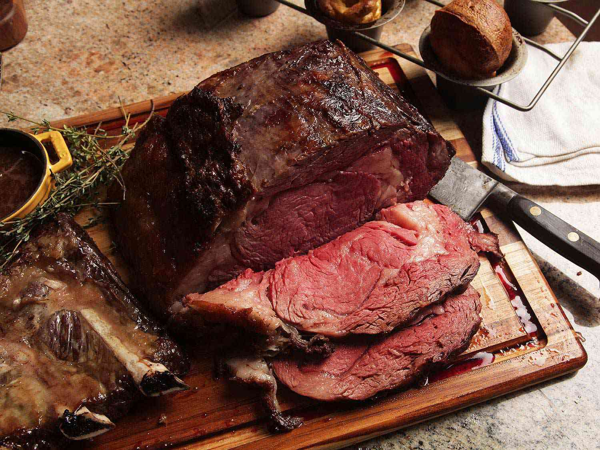

Perfect Prime Rib

How to make the Perfect Prime Rib
Prime rib (also known as standing rib roast) is up there next to turkey, honey baked ham, and beef tenderloin in terms of intimidating recipes. It’s a big ‘ol chunk of meat that’s usually the centerpiece of a holiday meal. And let’s be honest, you don’t want to accidentally over cook it or mess it up, especially if you have guests over.
Adding to the intimidation…prime rib is also super pricey. But if you’ve enjoyed a perfectly roasted prime rib, you also know that it’s worth every penny for that beautiful, show-stopping piece of meat.
So let’s jump to the good news – it’s really easy to cook! Sure, you may find different cooking methods online, like a reverse sear, but I promise that if you stick with this simple, no-fail prime rib recipe you’ll get raving accolades all around. You know my motto, simple and foolproof is best.
Prme rib ingredients
- Prime Rib: Grab a bone-in prime rib from your butcher. For details on picking the best one, read below.
- Butter: This helps the seasoning stick to the meat and crisps up the outside. You could also use ghee or oil for dairy-free.
- Herbs: Fresh rosemary and thyme pair beautifully with the garlic.
- Salt: You need a good amount of this! And make sure to use Kosher salt and not table salt.
- Pepper: Freshly cracked black pepper is best, if you have it.
Instructions
- Remove the prime rib from the fridge. Let it come to room temperature for 2-3 hours before cooking.
- Make the garlic herb butter. Preheat your oven to 450F, then mix together the butter, herbs, salt, and pepper in a small bowl.
- Pat and coat. After the prime rib has come to room temperature, pat it down with a few paper towels to remove any moisture. Then slather it all over with the garlic herb butter mix.
- It's time to roast it. Place the prime bones side down in an oven-safe pan or roasting pan. Place onion slices around the meat if you plan to make the red wine au jus. Then roast the prime rib for 20 minutes at the high temperature, to sear the outside and create a crust. After you’ve seared the outside, reduce the temperature to 325F, and continue cooking until the internal temperature reaches your desired level of done (see chart below).
- Let it rest. Remove the prime rib from the oven and let it rest for 20-30 minutes. You can tent it with aluminum foil to keep it warm.
- Slice it up. Remove the strings that are keeping the bones attached or slice the bones off the meat. Then, carve the prime rib into thick 1/2-inch slices and serve with the red wine au jus.